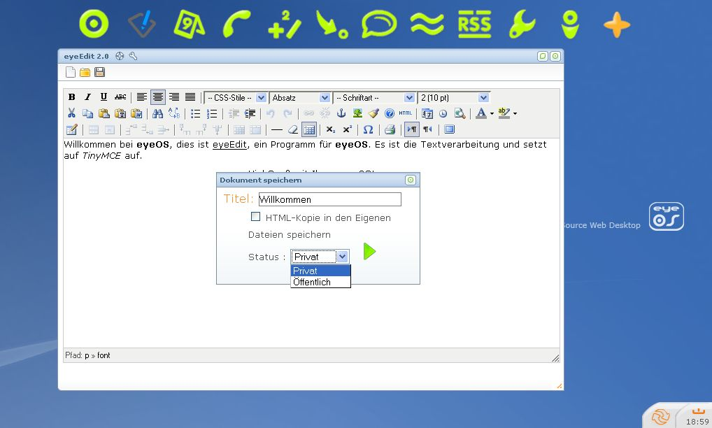

eyeOS
Benutzen Sie eyeOS, wie ein Betriebssystem. Der reizende Unterschied ist jedoch, dass dieses Betriebssystem in Ihrem Browser läuft und von jedem PC mit Internetzugang benutzt werden kann, inklusive aller Ihrer Daten, die Sie mit eyeOS gespeichert haben.
{kind=link}
Neuen Account erstellen und einloggen
Nachdem Sie Ihre eyeOS-Seite geöffnet haben, müssen Sie für sich beim erstel Mal einen Account erstellen. Geben Sie dazu einfach Ihren Wunsch-Benutzernamen und Ihr gewünschtes Passwort ein. Als letztes wird nur noch eine E-Mail-Adresse gefordert.
Gegebenenfalls müssen Sie Ihren Account jetzt noch aktivieren. Normalerweise werden Sie aber direkt eingeloggt.
Wenn Sie die eyeOS-Seite bereits inklusive Account öffnen, geben Sie einfach Ihren Benutzernamen und Ihr Passwort ein.

Der eyeOS-Desktop
So sieht der eyeOS-Desktop aus. Fahren Sie mit Ihrem Mauszeiger über einen Button in der oberen Leiste. Sofort wird Ihnen der Name des Programms, hinter dem Button angezeigt (hier z.B.: eyeHome):
| eyeHome | Verwaltet Ihre Dateien und gibt schnell Überblick über aktuelle Themen in Ihrem Account |
 |
|
| eyeEdit | professionelle Textverarbeitung |
|  | |
| eyeCalendar | Kalender |
| eyePhones | Speichert Daten zu Personen |
| eyeCalc | Taschenrechner |
| eyeMessages | Schreiben Sie Nachrichten an andere eyeOS-Benutzer |
| eyeBoard | Chat |
| eyeNav | Internet Browser |
| eyeRSS | RSS Feed-Programm |
| eyeOptions | eyeOS-System-Optionen |
| eyeInfo | Gibt Informationen über die eyeOS-Entwicklung |
| eyeApps | Verwaltet die eyeOS-Programme |
{kind=link}
Außerdem gibt es noch kleinere Programme, wie den eyeViewer oder eyeFrame. Die sind aber lediglich zum Öffnen von Dateien gedacht und öffnen sich bei bedarf automatisch.

Das Fenstersystem
EyeOS ist wie z.B. Microsoft Windows oder KDE bzw. Gnome unter Linux auch auf Fenster ausgelegt.
Am links, oberen Rand befindet sich der Titel des Fensters. Daneben befinden sich Symbole:
 - Hilfe des geöffneten
Programms
- Hilfe des geöffneten
Programms - Einstellungen des
geöffneten Programms
- Einstellungen des
geöffneten ProgrammsAuf der rechten Seite befinden sich ebenfalls Symbole:
 - Maximiert das
Fenster
- Maximiert das
Fenster -
Schließt das Fenster
-
Schließt das FensterUnten, rechts befindet sich ebenfalls ein Symbol
 . Verwenden Sie es
um die Größe eines Fensters mauell zu
verändern.
. Verwenden Sie es
um die Größe eines Fensters mauell zu
verändern.Sie verschieben ein Fenster, indem Sie es am oberen oder am unteren Rand "anfassen" und dann ziehen.